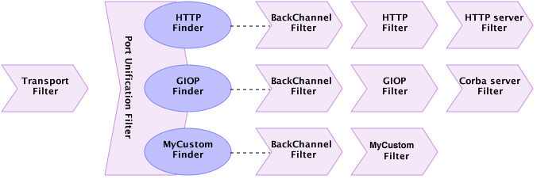

Port Unification Overview
When implementing a network application which provides several network services such as Web server (HTTP, HTTPS), Corba, JMS, we may think about how these services will be published.
The natural way of publishing different types of services - is to make them available on separate TCP ports (one TCP port per service). Usually HTTP is published on port 80, HTTPS 443, and so on. There might be no problems with that approach; the service consumer just must remember its own TCP port number, but sometimes, due to certain admin restrictions, we’re not able to make all the required TCP ports available for the external consumers on Internet. What if we’re limited just by one TCP port accessible for the external (Internet) service consumers? For that case, we have to have a solution which let’s us share a single TCP port among different services and, depending on incoming service request, redirect it to the corresponding service. This solution is called Port Unification.
How it works
Port Unification, in Grizzly, is represented by PUFilter which is a Grizzly 2.3 FilterChain Filter. This filter plays role of a fork in the FilterChain.
Each “unified” protocol, should be represented by a object pair:
-
ProtocolFinder, which is responsible for parsing incoming data and figuring out if the data belongs to the specific protocol;
-
FilterChain, represents specific protocol FilterChain.
So the final FilterChain will look like:

For better usability, Grizzly Port Unification introduces the PUProtocol abstraction, which holds ProtocolFinder + FilterChain pair.
The picture above is not complete, one piece is missing. We can imagine how new data comes from network, comes into main FilterChain, it redirects it to the corresponding protocol FilterChain.
But what about opposite direction? Imagine HttpServerFilter wants to send data back to the client, so it constructs HttpPacket and send it by the custom protocol FilterChain. HttpFilter intercepts the HttpPacket, decodes it into a Buffer and… there is no Filter in the custom protocol FilterChain to pass the Buffer to, so it never comes to TransportFilter and never gets sent! In order to fix that, we need to add utility back channel Filter as the first Filter in the protocol FilterChain, which will be responsible for redirecting custom protocol FilterChain processing back to the main FilterChain. So finally complete picture will look like:

The PUFilter logic could be described using following flowchart diagram:

Sample
Assume we have two services: add and sub, which are responsible for adding and subtracting passed integer values. The services protocol could be described by the following ABNF:
- add
protocol = magic
value1
value2
magic = "add"
value1 = INT
value2 = INT
INT = 4*BYTE
BYTE = OCTET
- sub
protocol = magic
value1
value2
magic = "sub"
value1 = INT
value2 = INT
INT = 4*BYTE
BYTE = OCTET
From the protocol description, it’s obvious we can distinguish two services and their protocols by 3-bytes magic header, add-service has “add”, sub-service “sub”. So it’s what service’s ProtocolFinder should address. For example add-service ProtocolFinder may look like:
/**
* {@link ProtocolFinder}, responsible to determine if incoming byte buffer
* represents ADD-service request.
*/
public class AddProtocolFinder implements ProtocolFinder {
private final static byte[] magic = {'a', 'd', 'd'};
/**
* {@inheritDoc}
*/
@Override
public Result find(final PUContext puContext, final FilterChainContext ctx) {
// Get the input Buffer
final Buffer inputBuffer = ctx.getMessage();
final int bytesToCompare = Math.min(magic.length, inputBuffer.remaining());
final int bufferStart = inputBuffer.position();
// Compare incoming bytes with ADD-service protocol magic
for (int i = 0; i < bytesToCompare; i++) {
if (magic[i] != inputBuffer.get(bufferStart + i)) {
// If at least one byte doesn't match - it's not ADD-service protocol
return Result.NOT_FOUND;
}
}
// if we check entire magic - return FOUND, or NEED_MORE_DATA otherwise
return bytesToCompare == magic.length ?
Result.FOUND : Result.NEED_MORE_DATA;
}
}
The add-service FilterChain will contain two Filters:
-
AddServerMessageFilter, responsible for parsing/serializing add-service messages
-
AddServiceFilter the actual service implementation
The PUProtocol initialization and registration for add-service will look following way:
// Create PUFilter
final PUFilter puFilter = new PUFilter();
// Create ADD-service ProtocolFinder
final ProtocolFinder addProtocolFinder = new AddProtocolFinder();
// Create ADD-service FilterChain
final FilterChain addProtocolFilterChain =
puFilter.getPUFilterChainBuilder()
// Add ADD-service message parser/serializer
.add(new AddServerMessageFilter())
// Add ADD-service filter
.add(new AddServiceFilter())
.build();
// Construct PUProtocol
final PUProtocol addServicePUProtocol = new PUProtocol(addProtocolFinder, addProtocolFilterChain);
// Register add-service pu protocol
puFilter.register(addServicePUProtocol);
Similar coding is required for the sub-service. Finally port unification Filter (PUFilter) should be added to the main FilterChain and Transport could be started
// Construct the main filter chain
final FilterChainBuilder puFilterChainBuilder = FilterChainBuilder.stateless()
.add(new TransportFilter())
.add(puFilter);
// Build TCP transport
final TCPNIOTransport transport = TCPNIOTransportBuilder.newInstance().build();
transport.setProcessor(puFilterChainBuilder.build());
// Bind to the server port
transport.bind(PORT);
// Start
transport.start();
Complete sample code could be found here.